측량및지형공간정보산업기사 (2008-03-02 기출문제)
1과목: 응용측량
1. Simpson 제1법칙에 의하여 면적을 구하고자 한다. 각 측점의 높이가 h0=2.8m, h1=9.4m, h2=11.6m, h3=13.8m, h4=6.4m이고 각 측점과 측점과의 간격이 5.0m로 일정하다면 면적은 얼마인가?
- 108.7m2
- 208.7m2
- 308.7m2
- 408.7m2
(정답률: 알수없음)

2. 노선측량의 곡선에 대한 설명으로 옳지 않은 것은?
- 클로소이드 곡선은 완화곡선의 일종이다.
- 철도의 종단곡선은 주로 원곡선이 사용된다.
- 클로소이드 곡선은 고속도로에 적합하다.
- 클로소이드 곡선은 곡률이 곡선의 길이에 반비례한다.
(정답률: 알수없음)
3. 하천의 횡단면 연직선내의 평균유속을 1점법으로 구하는 식으로 옳은 것은? (단, Vm=평균유속, Vd=수면으로부터 수심(H0의 bh인 지점의 유속)
- Vm=V0.2
- Vm=V0.4
- Vm=V0.6
- Vm=V0.8
(정답률: 알수없음)
4. 그림과 같이 관측된 성토고를 이용하여 전토량을 구하는데 적합한 공식은? (단, 면적 A1=A2=A3임)
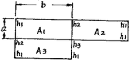
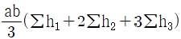
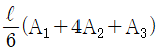
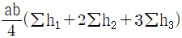
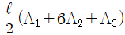
(정답률: 알수없음)
5. 삼각형 꼭지점의 좌표가 각각 A(3, 4), B(6, 7), C(7, 1)일 때 삼각형의 면적은? (단, 단위는 m임)
- 10.5m2
- 12.5m2
- 15.0m2
- 17.5m2
(정답률: 알수없음)
6. 캔트(cant)의 계산에서 속도 및 반경을 모두 2배로 할 때 캔트의 크기 변화는?
- 1/4로 감소
- 1/2로 감소
- 2배로 증가
- 4배로 증가
(정답률: 알수없음)
7. 도로의 기울기 계산을 위한 수준측량 결과가 그림과 같을 때 A, B 두 점간의 기울기는? (단, A, B두 점간의 경사거리는 42m이다.)
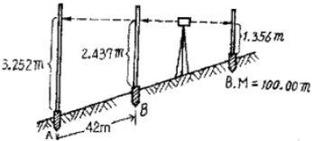
- 0.76%
- 1.94%
- 2.02%
- 10.38%
(정답률: 알수없음)
8. 그림과 같은 토지의 한변 BC=60m 상의 점 D와 AC=50m 상의 점 E를 연결하여 m:n=1:1로 면적을 등분하려면 AE의 길이를 얼마로 하면 좋은가? (단, DB=10m)
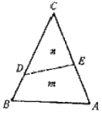
- AE=30m
- AE=25m
- AE=20m
- AE=15m
(정답률: 알수없음)
9. 하천측량에서 평면측량의 일반적인 범위는?
- 유제부에서 제외지 및 제내지 300m 이내, 무제부에서는 홍수영향 구역보다 약간 넓게
- 유제부에서 제외지 및 제내지 200m 이내, 무제부에서는 홍수영향 구역보다 약간 좁게
- 유제부에서 제외지 및 제내지 200m 이내, 무제부에서는 홍수영향 구역보다 약간 넓게
- 유제부에서 제외지 및 제내지 300m 이내, 무제부에서는 홍수영향 구역보다 약간 좁게
(정답률: 알수없음)
10. 노선측량에서 제1중앙종거와 제2중앙종거의 비율은 약 얼마인가?
- 1/2
- 1/4
- 1/8
- 1/16
(정답률: 알수없음)
11. 직선 터널 양끝의 좌표가 A(120, 60), B(240, 70)이고 각각의 표고가 80m, 82m 일 때 이 터널의 경사거리는? (단, 단위는 m임)
- 115.12m
- 120.43m
- 125.44m
- 130.43m
(정답률: 알수없음)
12. 시설물의 경관을 수직시각(θv)에 의하여 평가하는 경우, 시설물이 경관의 주제가 되고 쾌적한 경관으로 인식되는 수직시각의 범위는?
- 0°＜θv≤15°
- 15°＜θv≤30°
- 30°＜θv≤45°
- 45°＜θv≤60°
(정답률: 알수없음)
13. 완화곡선의 설치장소로 맞는 것은?
- 직선과 원곡선사이
- 직선과 직선사이
- 종곡선과 포물선사이
- 포물선과 원곡선사이
(정답률: 알수없음)
14. 터널내 곡선 설치 방법으로 가장 거리가 먼 것은?
- 편각법
- 접선편거법
- 내접다각형법
- 외접다각형법
(정답률: 알수없음)
15. 터널측량 중 A점에 기계를 세우고 천장의 B점에 표척을 거꾸로 세워 1.03,m를 읽었다면 B점의 지반고는? (단, A점의 지반고는 10.30m, 기계고는 1.44m)
- 10.71m
- 11.23m
- 11.74m
- 12.77m
(정답률: 알수없음)
16. 부지를 사용하여 유속을 측정하고자 할 때 일반적으로 사용되는 부자가 아닌 것은?
- 표면부자
- 이중부자
- 봉부자
- 거리표부자
(정답률: 알수없음)
17. 지하에 매설되어 있는 금속관로 또는 비금속관로의 평면 위치에 허용탐사 오차는?
- ±10mm
- ±20mm
- ±50mm
- ±1m
(정답률: 알수없음)
18. 원곡선 설치 시 교각이 49° 30‘, 반지름이 150m, 중심말뚝 간격이 20m일 때 20m에 대한 편각은 얼마인가?
- 5° 52‘ 18“
- 4° 20‘ 15“
- 3° 49‘ 11“
- 1° 46‘ 32“
(정답률: 알수없음)
19. 하천측량에서 유속관측 방법이 아닌 것은?
- 부표에 의한 방법
- 양수표에 의한 방법
- 유속계에 의한 방법
- 하천 기울기를 이용하는 방법
(정답률: 알수없음)
20. 노선의 중심말뚝(간격 20m)에 대해서 횡단측량 결과에 예정노선의 단면을 넣어서 절토면적을 구한 결과 단면 Ⅰ의 면적 A1=78m2, 단면 Ⅱ의 면적은 A2=132m2임을 알았다. 단면 Ⅰ-Ⅱ간의 절토량은?
- 2,000m3
- 2,100m3
- 2,200m3
- 2,500m3
(정답률: 알수없음)
2과목: 사진측량 및 원격탐사
21. 촬영고도 3,000m에서 초점거리 210mm 카메라로 수직 촬영한 항공사진 상에서 길이 2.1mm로 나타난 교량의 실제길이는?
- 20m
- 30m
- 50m
- 90m
(정답률: 알수없음)
22. 건물 바닥을 기준으로 촬영고도 6,000m에서 촬영한 항공사진에서 건물정점의 시차 16.00mm, 건물바닥 시차가 15.96mm 일 때 이 건물의 높이는?
- 10m
- 15m
- 20m
- 25m
(정답률: 알수없음)
23. 사진 판독 요소와 거리가 먼 것은?
- 색조, 크기
- 위치, 시간
- 질감, 모양
- 과고감, 음영
(정답률: 알수없음)
24. 동서 10km, 남북 10km의 정사각형 구역에서 축척 1/20,000인 항공사진 한 장의 입체모델에 찍힌 유효면적이 5.92km2일 때 이 지역에 필요한 사진 매수는? (단, 안전율은 20%이다.)
- 4매
- 17매
- 21매
- 34매
(정답률: 알수없음)
25. 초점거리 15cm인 카메라로 고도 1800m에서 촬영한 연직사진에서 도로 교차점과 표고 300m의 산정이 찍혀 있다. 교차점은 사진 주점과 일치하고, 교차점과 산정의 거리는 밀착사진상에서 55mm였다. 이 사진으로부터 작성된 축척 1/5000 지형도 상에서 두 점의 거리는?
- 110m
- 130m
- 150m
- 170m
(정답률: 알수없음)
26. 초점거리 15cm, 사진크기 23cm×23cmm, 종중복도 60%, 축척 1/12,000일 때 기선고도비는?
- 0.613
- 0.734
- 0.787
- 0.821
(정답률: 알수없음)
27. 사진지도에서 사진기의 경사, 지표면의 비고를 수정하여 등고선을 삽입한 사진지도는?
- 약조정집성사진지도
- 반조정집성사진지도
- 조정집성사진지도
- 정사투영사진지도
(정답률: 알수없음)
28. 다음 설명 중 틀린 것은?
- 자료의 입력은 기존 지도와 야외조사자료, 인공위성 등을 통해 얻은 정보 등을 수치형태로 입력하거나 변환하는 것을 말한다.
- 자료의 출력은 자료를 보여주고 분석결과를 사용자에게 알려주는 것을 말한다.
- 자료변환은 지형, 지물과 관련된 사항을 현지에서 직접 조사하는 것을 말한다.
- 자료의 저장과 데이터베이스 관리에서는 지표상의 위치와 연결성, 지리적 속성에 대한 정보를 구체화하고 조직화하는 방법이 중요한 과제이다.
(정답률: 알수없음)
29. 항공사진 측량과 평판측량을 비교할 때 항공사진 측량의 특징이 아닌 것은?
- 넓은 지역의 측량에서는 경제적이다.
- 상대 정밀도가 높다.
- 분업화 되어 능률적이다.
- 대축척의 측량일수록 경제적이다.
(정답률: 알수없음)
30. 사진측량 정확도에 관한 내용으로 옳은 것은?
- 사진 1매에서의 축척은 다를 수 있으므로 정확도가 균일하지 못하다.
- 종래의 측량방법과 달리 상대오차가 매우 불량하다.
- 표고에 대한 정확도는 촬영고도(H)의 0.1~0.2% 정도이다.
- 수평위치에 대한 정확도는 주점기선장(B)의 10~30μm정도이다.
(정답률: 알수없음)
31. 지형공간자료를 입력하는 단계로 옳게 나열된 것은?
- 비공간 속성자료의 입력→공간자료와 비공간자료의 연결→공간(위치)정보의 입력
- 공간자료와 비공간자료의 연결→공간(위치)정보의 입력→비공간 속성자료의 입력
- 공간(위치)정보의 입력→비공간 속성자료의 입력→공간자료와 비공간자료의 연결
- 공간(위치)정보의 입력→공간자료와 비공간자료의 연결→비공간 속성자료의 입력
(정답률: 알수없음)
32. 일반적으로 원격탐사 영상의 해상도 4가지로 구분된다. 그 중 개개 파장대 내의 데이터값이 가지는 범위를 의미하며, 임의 지상물체의 성질(에너지)을 얼마나 자세히 분석할 수 있는가를 의미하는 것은? (예 : 나무로 판독된 지형지물이 침엽수인가 활엽수인가)
- 분광해상도(Spectral Resolution)
- 방사해상도(Radiometric Resolution)
- 공간해상도(Spatial Resolution)
- 주기해상도(Temporal Resolution)
(정답률: 알수없음)
33. 절대표정에 대한 설명으로 옳은 것은?
- 보통 상호표정을 하기 전에 실시한다.
- 축척과 경사 및 위치를 결정한다.
- 사진의 초점거리를 조정한다.
- 사진의 중심표정을 한다.
(정답률: 알수없음)
34. 수치지형모델 중의 한 유형인 수치표고모델(DEM)의 활용과 가장 거리가 먼 것은?
- 토지피복도(Land Cover Map)
- 3차원 조망도(Perspective View)
- 경사도(Slope Map)
- 음영기복도(Shaded Relief Map)
(정답률: 알수없음)
35. 다음 중 근접성 분석을 위하여 지정된 요소들 주위에 일정한 풀리곤 구역을 생성해 주는 것은?
- 버퍼링
- 중첩
- 네트워크 분석
- 지도 연산
(정답률: 알수없음)
36. 내부 표정에 대한 설명으로 옳지 않은 것은?
- 사진의 주점을 조정한다.
- 사진의 초점거리를 조정한다.
- 축척과 경사를 조정한다.
- 지구곡률, 렌즈수차 등을 보정한다.
(정답률: 알수없음)
37. 렌즈의 광축과 화면이 교차하는 점을 무엇이라 하는가?
- 주점
- 등각점
- 연직점
- 부점
(정답률: 알수없음)
38. 원격탐사의 에너지원인 전자기복사에너지(Electromagnetic Radiation Energy) 중 가시광선 영역의 파장범위로 적당한 것은?
- 0.03μm 이하
- 3nm~6nm
- 0.4μm~0.7μm
- 0.01cm~1000cm
(정답률: 알수없음)
39. 다음 중 벡터 형식의 자료가 아닌 것은?
- TIGER
- GeoTiff
- PostScript
- DXF
(정답률: 알수없음)
40. 벡터구조를 격자구조와 비교할 때 벡터구조가 갖는 장단점에 대한 설명으로 틀린 것은?
- 그래픽의 정확도가 높다.
- 위치와 속성의 검색, 갱신, 일반화가 가능하다.
- 자료구조가 단순하다.
- 현상적 자료구조를 잘 표현할 수 있고 축양되어 있다.
(정답률: 알수없음)
3과목: GIS 및 GPS
41. 측선
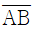
의 거리가 100m, 방위각이 290° 일 때 위거는?- 34.20m
- -34.20m
- 93.97m
- -93.97m
(정답률: 알수없음)
42. 수준측량에서 정오차를 제거하면 일반적인 오차는 어떤 오차로 처리하면 되는가?
- 누적오차
- 과대오차
- 오연오차
- 기계오차
(정답률: 알수없음)
43. 전파거리 측량기의 원리는 변조파장을 알면 거리를 구할 수 있다. 이 때 변조파장(λ)을 구하는 식으로 옳은 것은? (단, V : 보정된 전파 에너지속도, f : 변조주파수)
- f/V
- 2V/f
- V/2f
- V/f
(정답률: 알수없음)
44. 전파거리 측량기와 비교할 때 공파거리 측량기에 관한 설명으로 옳지 않은 것은?
- 정확도는 전파거리 측량기에 비해 다소 우수하다.
- 주로 중ㆍ단거리 측정용으로 사용된다.
- 안개나 구름의 영향을 거의 받지 않는다.
- 조작인원은 1명으로도 가능하다.
(정답률: 알수없음)
45. 그림과 같이 하천을 횡단하여 수준 측량을 하였을 경우 D점의 지반고는? (단, 측점 B, C는 수면과 일치하며 A점의 지반고는 10m임)
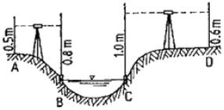
- 8.4m
- 9.7m
- 10.0m
- 10.1m
(정답률: 10%)
46. 다음의 산변측량에 관한 설명 중 옳지 않은 것은?
- 삼변측량은 삼각측량에 비하여 관측할 거리의 크기와 필요로 하는 정밀도에 관계없이 경제적인 측량법이다.
- 변의 길이만을 관측하여 삼각망(삼변측량)을 구성할 수 있다.
- 수평각을 대신하여 삼각형의 변의 길이를 직접 관측하여 삼각점의 위치를 결정하는 측량이다.
- 관측요소가 변의 길이뿐이므로 수학적 계산으로 변으로부터 각을 구하고 이 각과 변에 의해 수평위치를 구한다.
(정답률: 알수없음)
47. 그림에서 β=141° 31‘ 00“, S=1000.0m 일 때 P점의 X좌표는 얼마인가? (단, A점의 X좌표=+1850.00m, A점에서 B점의 방위각=278° 29’ 00” 임)
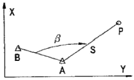
- +500.0m
- +1067.2m
- 2350.0m
- +2716.0m
(정답률: 알수없음)
48. 1회 관측에서 ±3mm의 우연오차가 발생하였을 때 20회 관측시의 우연오차는?
- ±1.34mm
- ±13.4mm
- ±47.3mm
- ±34mm
(정답률: 알수없음)
49. 기포관의 감도가 20“인 레벨로 거리 100m 지점의 표척을 시준할 때 기포관에서 1눈금의 오차가 있었다면 수준 오차는?
- 2.5mm
- 4.8mm
- 9.7mm
- 12.3mm
(정답률: 알수없음)
50. 1/7200의 정확도가 요구되는 600m 거리측량에서 사거리를 수평거리로 볼 수 있는 고저차의 허용한도는?
- 약 15m
- 약 10m
- 약 5m
- 약 1m
(정답률: 알수없음)
51. 기선측량값에 대한 보정 중 정오차 보정하지 않는 것은?
- 기선척의 표준척에 대한 보정
- 온도 및 장력에 대한 보정
- 평균해수면상에 대한 보정
- 눈금 오독에 대한 보정
(정답률: 알수없음)
52. 표고 112.24m 지점에서 관측한 기선장이 3321.25m 이면 평균해수면상의 거리로 보정된 기선장은 몇 m인가? (단, 지구는 곡선반지름이 6370km 인 구로 가정한다.)
- 3321.1915
- 3321.2162
- 3321.2204
- 3321.2329
(정답률: 알수없음)
53. 축척 1/25000인 지형도에서 산정의 표고 449m, 산록의 표고 12m일 때 산정과 산록 사이의 도상거리는 48mm였다. 이 산의 경사각은? (단, 이 산의 경사는 등경사로 한다.)
- 약 15°
- 약 20°
- 약 25°
- 약 32°
(정답률: 17%)
54. A, B, C 세 그룹이 기선측량을 한 결과 다음과 같았다. 최확값은 얼마인가?
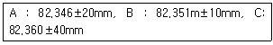
- 82.347m
- 82.350m
- 82.353m
- 82.356m
(정답률: 알수없음)
55. 다음 중 GPS 위성의 위치결정에 사용되는 L1, L2 신호의 주파수로 옳게 짝지어진 것은?
- 1574.42MHz, 1227.60MHz
- 10.23MHz, 20.46MHz
- 511.50MHz, 562.65MHz
- 1023.00MHz, 204.60MHz
(정답률: 알수없음)
56. GPS수신기를 2개 이상 사용하여 상대적 측위를 하는 방법으로 좌표를 알고 있는 기지점에 고정용 GPS수신기를 설치하고 위성들을 모니터링하여 개별위성의 거리오차 보정치를 정밀하게 계산하여 이를 작업현장의 이동용 수신기의 오차보정에 사용하는 방식을 무엇이라고 하는가?
- DGPS
- GPS
- GIS
- NGIS
(정답률: 알수없음)
57. 측량에 있어 부정오차가 일어날 가능성의 확률적 분포 특성에 대한 설명으로 틀린 것은?
- 큰 오차가 생길 확률은 작은 오차가 생길 확률보다 매우 작다.
- 같은 크기의양(+)오차와 음(-)오차가 생길 확률은 같다.
- 매우 큰 오차는 거의 생기지 않는다.
- 오차의 발생확률은 최소제곱법에 따른다.
(정답률: 알수없음)
58. 측량용 나침반(Compass)를 써서 어떤 방향선의 자북방위각을 관측하여 N30° 30' E를 얻었다. 이 지점의 자침 편각이 서편 6° 15‘이면, 이 방향선의 진북방위각은 얼마인가?
- 24° 15‘
- 36° 45‘
- 323° 15‘
- 335° 45‘
(정답률: 알수없음)
59. 지도를 표현내용에 따라 일반도, 주제도, 특수도로 구분할 때 주제도에 포함되지 않는 것은?
- 지적도
- 토지분류도
- 토지이용도
- 교통도
(정답률: 알수없음)
60. GPS측량에서 이동국 GPS관측점에서 최소 5개의 위성신호를 처리한 성과와 기지국 GPS에서 송신된 위치자료를 수신하여 이동지점의 위치좌표를 바로 구할 수 있는 측량방법은?
- 정지식 GPS방법
- 이동식 GPS방법
- 역정밀 GPS방법
- 실시간 이동식 GPS방법
(정답률: 알수없음)
4과목: 측량학
61. 다음 측량표 중 영구표지에 속하지 않는 것은?
- 측량표지막대
- 자기점표석
- 수준점표석
- 검조의
(정답률: 알수없음)
62. 건설교통부 장관은 일반측량의 성과가 어떤 목적을 위하여 필요하다고 인정되는 경우에는 일반측량의 실시자에게 측량성과 및 측량기록 사본의 제출을 요구할 수 있다. 이 때 그 목적과 관계없는 것은?
- 측량에 관한 자료의 수집 및 분석
- 측량의 정확성 확보
- 측량기기의 개발
- 측량의 중복 배제
(정답률: 알수없음)
63. 다음 설명 중 공공측량에 해당하는 것은?
- 건설교통부장관이 고시하는 국지적 측량
- 모든 측량의 기초가 되는 측량으로서 국토지리정보원장이 실시하는 측량
- 기본측량외의 측량중 국가ㆍ지방자치단체 및 정부투자기관이 실시하는 측량
- 공공의 이해와 관계가 있는 측량으로서 국토지리정보원장이 실시하는 측량
(정답률: 알수없음)
64. 다음 중 기본측량을 위하여 설치된 측량표를 감시할 의무가 있는 자는?
- 서울특별시장, 관역시장 또는 도지사
- 경찰서장
- 시장 또는 군수
- 국토지리정보원장
(정답률: 알수없음)
65. 측량법에 의한 측량업의 종류와 거리가 먼 것은?
- 지적측량업
- 공공측량업
- 일반측량업
- 영상처리업
(정답률: 알수없음)
66. 1/50,000 지형도에서 고층건물지대란 밀집건물지대에 있어서 5층이상의 건물이 밀집하여 있는 지역을 의미하며 도상에서 최소의 크기가 몇 mm이상이어야 하는가?
- 4mm
- 3mm
- 2mm
- 1mm
(정답률: 알수없음)
67. 측량법에서 정의된 용어에 대한 설명 중 그 내용이 옳지 않은 것은?
- “측량계획기관”이라 함은 일반측량에 관한 종합적인 계획을 수립하는 자를 말한다.
- “측량작업기관”은 측량계획기관의 지시 또는 위임에 의하여 측량에 관한 작업을 실시하는 자를 말한다.
- 측량계획기관이 그 계획한 측량을 직접 실시하는 경우에도 “측량작업기관”으로 볼 수 있다.
- “측량성과”라 함은 당해 측량에서 얻은 최종결과를 말한다.
(정답률: 알수없음)
68. 다음 중 성능검사 대행자의 등록을 취소할 수 없는 것은?
- 부정한 방법으로 등록을 한 때
- 자기의 성능검사 대행자 등록증을 대여하는 행위를 한 때
- 업무정지기간 중에 계속하여 업무를 한 때
- 정당한 사유없이 성능검사를 거부 또는 기피 한 때
(정답률: 알수없음)
69. 1:50,000 지형도에서 목표물의 취사 선택 기준으로 옳지 않은 것은?
- 원거리부터 식별이 용이한 목표물
- 특별한 형태를 이루고 있는 것
- 학술상 저명 한 것
- 표시할 목표물이 다수 근거리에 있을 경우는 기호 표시를 생략할 수 없다.
(정답률: 알수없음)
70. 대한민국의 경위도 원점이 있는 곳은?
- 인천시 용현동
- 수원시 원천동
- 종로구 세종로
- 동대문구 휘경동
(정답률: 알수없음)
71. 측량기술자가 측량협회의 회원이 되는 시점에 대한 설명으로 가장 접합한 것은?
- 측량업에 종사 후 1년후 부터
- 측량기술자의 자유의사에 의해
- 국가기술자격을 받은 날로부터
- 협회의 정관이 정하는 바에 의하여
(정답률: 알수없음)
72. 측량법에 의해 과태료 처분에 불복이 있는 자는 그 처분이 있음을 안 날로부터 몇일 이내에 이의를 제기할 수 있는가?
- 15일
- 20일
- 25일
- 30일
(정답률: 알수없음)
73. 측량법상의 벌칙 중 3년 이하의 징역 또는 3000만원 이하의 벌금에 처라는 것이 아닌 것은?
- 미리 조작한 가격으로 입찰한 자
- 다른 사람의 견적의 제출 자
- 부정한 방법으로 측량업의 등록을 한 자
- 입찰행위를 방해한 자
(정답률: 알수없음)
74. 측량성과의 고시 사항이 아닌 것은?
- 측량의 종류 및 정확도
- 측량실시에 소요되는 경비 및 인력
- 측량실시의 시기 및 지역
- 측량성고의 보관장소
(정답률: 알수없음)
75. 측량업 등록 신청서에 필요한 첨부 서류가 아닌 것은?
- 장비를 갖춘 사실을 증명하는 서류
- 법인인 경우 등기부등본
- 측량기술자의 고용계약서
- 기술능력을 갖춘 사실을 증명하는 서류
(정답률: 알수없음)
76. 다음 중 측량의 기준으로 사용할 수 있는 좌표가 아닌 것은?
- 극좌표
- 지구중심직교좌표
- 직각좌표
- UTM 좌표
(정답률: 알수없음)
77. 기본측량실시를 위해 타인의 토지 출입 및 일시사용 행위로 인한 손실이 발생할 경우 보상하여야 하는 자는?
- 건설교통부장관
- 시ㆍ도지사
- 지방국토관리청장
- 국토지리정보원장
(정답률: 알수없음)
78. 기본측량용역의 경우 측량기술자의 현장배치기준으로 옳은 것은?
- 초급기술자 3인 이상
- 중급기술자 2인 이상
- 고급기술자 1인 이상
- 고급기술자 1인, 중급기술자 2인 이상
(정답률: 알수없음)
79. 수치주제도의 보완은 몇 년 주기로 하는가?
- 1년
- 2년
- 3년
- 4년
(정답률: 알수없음)
80. 우리나라 지도에 사용되는 기호 및 선의 굵기를 정하는 자는?
- 국토지리정보원장
- 건설교통부장관
- 시ㆍ도지사
- 행정자치부장관
(정답률: 알수없음)
면적 = (간격/3) x [f(x0) + 4f(x1) + 2f(x2) + 4f(x3) + f(x4)]
여기서 간격은 5.0m이고, 각 측점의 높이는 h0=2.8m, h1=9.4m, h2=11.6m, h3=13.8m, h4=6.4m이다. 따라서,
면적 = (5.0/3) x [2.8 + 4(9.4) + 2(11.6) + 4(13.8) + 6.4]
= 208.7m2
따라서, 정답은 "208.7m2"이다.